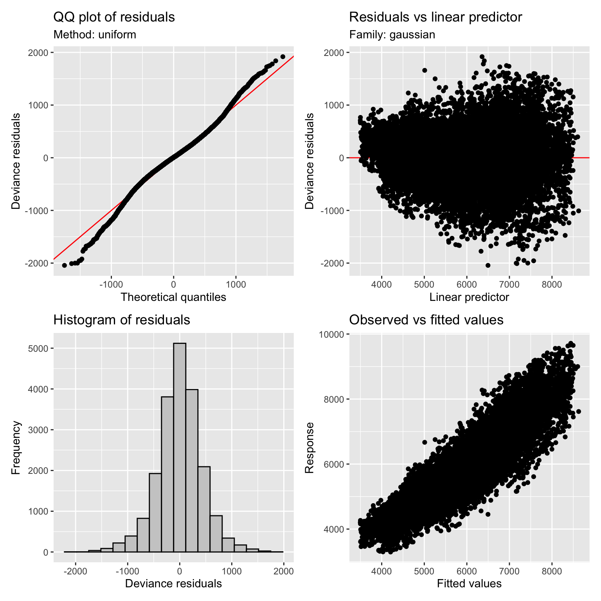
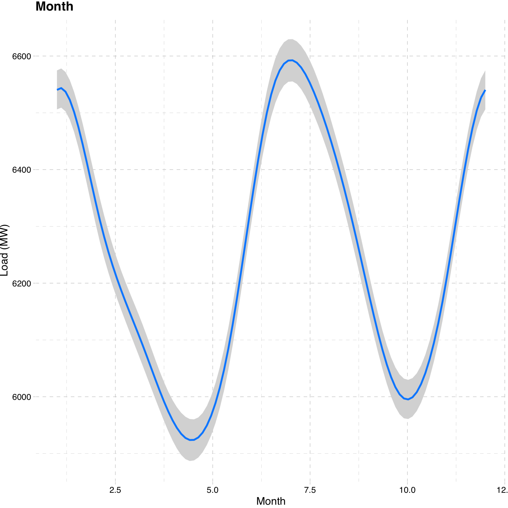
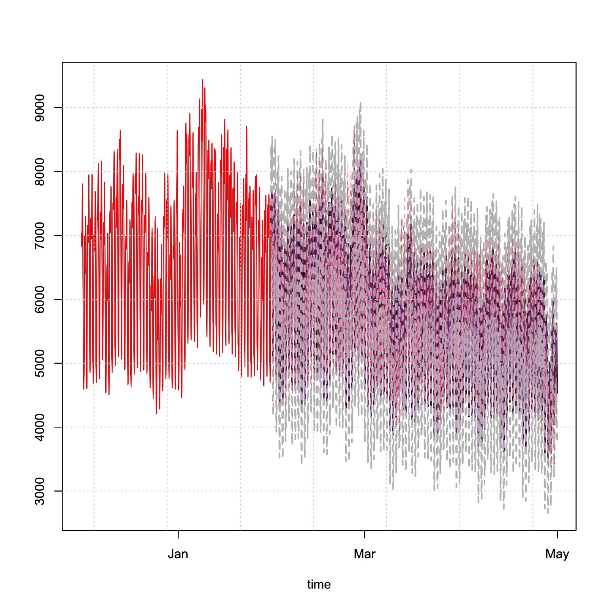

Chapter 10 tsgam package
10.1 Introduction
The tsgam package provides a custom wrapper of the gam function from the mgcv package of Wood (2022), in order to conform to the methods and outputs of the tsmodels framework. In particular, the predict method
will return the simulated distribution of the mean forecast.
The reason for introducing this model into the framework is due to the flexibility and robustness of the smooth basis functions in Generalized Additive Models (GAMs), the speed of estimation when working with large datasets, the ability to capture complex and multiple seasonal periods and potentially many regressors which are available at the forecast horizon which may not be purely linear in the response.
10.2 Package Demo: Electricity Load
We highlight the package functionality using the Total electricity load in Greece dataset from the tsdatasets package.
10.2.1 Estimation
The model specification, unlike previous packages in the tsmodels repo, takes as argument a formula describing the GAM model, in line with how many linear models work in R. This is a flexible approach, but does require an understanding of the types of smooth constructs available in mgcv.
We first load the data and construct some additional information from the index and load information. We use the 48 hour lagged value of load to be conservative in terms of release schedules of the actual load and forecast delays. We also construct hour of day, day of week and month of year variables to capture stable seasonal patterns using cyclic cubic regression splines. In practice, one would hopefully have more information to include such as forecast temperatures, forecast demand etc.
Sys.setenv(TZ = "UTC")
library(tsdatasets)##
## Attaching package: 'tsdatasets'## The following object is masked _by_ '.GlobalEnv':
##
## priceunitslibrary(tsgam)
library(tsaux)
library(data.table)
library(xts)
library(gratia)
library(visreg)
library(ggplot2)##
## Attaching package: 'ggplot2'## The following object is masked from 'package:dlm':
##
## %+%x <- tsdatasets::electricload
x <- data.table(index = index(x), load = as.numeric(x))
x[,lag48 := as.numeric(lag.xts(xts(load, index),48))]
x[,hour := hour(index)]
x[,day := wday(index)]
x[,month := month(index)]
x <- na.omit(as.xts(x))
head(x)## load lag48 hour day month
## 2016-10-19 00:00:00 3847 3745 0 4 10
## 2016-10-19 01:00:00 3838 3702 1 4 10
## 2016-10-19 02:00:00 3965 3783 2 4 10
## 2016-10-19 03:00:00 4351 4139 3 4 10
## 2016-10-19 04:00:00 4978 4691 4 4 10
## 2016-10-19 05:00:00 5520 5104 5 4 10We’ll estimate 2 models and compare them using an F-test. The first model simply used the 48 hour lag of the load for prediction, whilst the second model also makes use of the seasonal factors. We’ll also use approximately 90% of the data for training and leave 10% for out of sample prediction.
train_dataset <- x[1:20000]
test_dataset <- x[20001:nrow(x)]
f_baseline <- 'load~s(lag48, bs = "tp")'
f_extended <- 'load~s(lag48, bs = "tp") + s(hour, bs = "cc", k = 23) + s(day, bs = "cc", k = 6) + s(month, bs = "cc", k = 11)'
spec_baseline <- gam_modelspec(f_baseline, data = train_dataset)
spec_extended <- gam_modelspec(f_extended, data = train_dataset)
mod_baseline <- estimate(spec_baseline, select = TRUE, method = "REML")
mod_extended <- estimate(spec_extended, select = TRUE, method = "REML")The estimated objects include a slot for model which is the mgcv estimated object, from which we can use existing methods for evaluation. We first compare the extended model with the baseline model using a F-test.
anova(mod_baseline$model, mod_extended$model, test = "F")## Analysis of Deviance Table
##
## Model 1: load ~ s(lag48, bs = "tp")
## Model 2: load ~ s(lag48, bs = "tp") + s(hour, bs = "cc", k = 23) + s(day,
## bs = "cc", k = 6) + s(month, bs = "cc", k = 11)
## Resid. Df Resid. Dev Df Deviance F Pr(>F)
## 1 19991 6386420897
## 2 19960 3728763057 31.286 2657657840 454.78 < 2.2e-16 ***
## ---
## Signif. codes: 0 '***' 0.001 '**' 0.01 '*' 0.05 '.' 0.1 ' ' 1Even though the extended model has significantly more parameters, the test indicates that it provides a better fit than the baseline. We therefore proceed with this model.
summary(mod_extended$model)##
## Family: gaussian
## Link function: identity
##
## Formula:
## load ~ s(lag48, bs = "tp") + s(hour, bs = "cc", k = 23) + s(day,
## bs = "cc", k = 6) + s(month, bs = "cc", k = 11)
##
## Parametric coefficients:
## Estimate Std. Error t value Pr(>|t|)
## (Intercept) 5902.478 3.056 1931 <2e-16 ***
## ---
## Signif. codes: 0 '***' 0.001 '**' 0.01 '*' 0.05 '.' 0.1 ' ' 1
##
## Approximate significance of smooth terms:
## edf Ref.df F p-value
## s(lag48) 7.785 9 1226.1 <2e-16 ***
## s(hour) 15.517 21 133.3 <2e-16 ***
## s(day) 3.996 4 1755.0 <2e-16 ***
## s(month) 8.874 9 270.8 <2e-16 ***
## ---
## Signif. codes: 0 '***' 0.001 '**' 0.01 '*' 0.05 '.' 0.1 ' ' 1
##
## R-sq.(adj) = 0.853 Deviance explained = 85.4%
## -REML = 1.4984e+05 Scale est. = 1.8679e+05 n = 20000The extended model explains about 85% of the deviance. Looking at the QQ plot of the residuals using the appraise function from the gratia package suggests that the aussian assumptions is reasonable.
appraise(mod_extended$model)
The figure below shows the marginal effect plot of the months on Load, with a clear peak during summer and winter months as load goes up due to temperature and hence the use of air-conditioners and heaters respectively.
visreg(fit = mod_extended$model, xvar = c("month"), data = as.data.frame(train_dataset),
type = "conditional", gg = T, overlay = T, partial = F, rug = F, ylab = "Load (MW)",
xlab = "Month") + ggtitle("Month") + ggthemes::theme_pander()
10.2.2 Prediction
The prediction method does not have any n.ahead arguments as in other time
series methods in the tsmodels framework, instead being completely determined
by the newdata argument. Additionally, the argument distribution can be used
to proxy the simulated distribution by any other in the tsdistributions package
if it is believed that the Gaussian assumption is too restrictive. Choosing another
distribution will lead to the estimation of the distributional parameters on the
response residuals followed by simulation of the distribution given these parameters
and the forecast mean. Comparison of different simulated predictive distributions
can then be carried out using for instance the CRSP or MIS functions from the
tsaux package.
A further argument, tabulate, returns a data.table object of the draws, forecast
dates and predictions in long format which may be useful in production settings when
such values need to be stored in a database.
p <- predict(mod_extended, newdata = test_dataset[,c("lag48", "hour", "day", "month")], nsim = 5000, tabular = FALSE,
distribution = NULL)Plotting the simulated predictive distribution against the realized values indicates reasonable performance, which we confirm with a table of statistics.
plot(p, n_original = 24*30*2, gradient_color = "white", interval_color = "grey", median_width = 2)
lines(index(test_dataset), as.numeric(test_dataset$load), col = 2, lwd = 0.5, lty = 2)
p_zoom <- p$distribution[,1:(24*10)]
class(p_zoom) <- "tsmodel.distribution"
plot(p_zoom, date_class = "POSIXct", main = "Prediction Sub-Period")
lines(index(test_dataset[colnames(p_zoom)]), as.numeric(test_dataset[colnames(p_zoom)]$load), col = 2, lwd = 2, lty = 2)print(data.table(`MAPE (%)` = mape(test_dataset$load, p$mean) * 100,
`SMAPE (%)` = smape(test_dataset$load, p$mean) * 100,
`BIAS (%)` = bias(test_dataset$load, p$mean) * 100,
CRPS = crps(test_dataset$load, p$distribution)), digits = 3)## MAPE (%) SMAPE (%) BIAS (%) CRPS
## <num> <num> <num> <num>
## 1: 6.06 3.04 -0.823 251There is also a tsbacktest method which will be expanded on in a separate post
as this takes a training and testing split list of time indices which departs
from the current approach in the other packages but offers more flexibility and is more
suitable for models of this type.